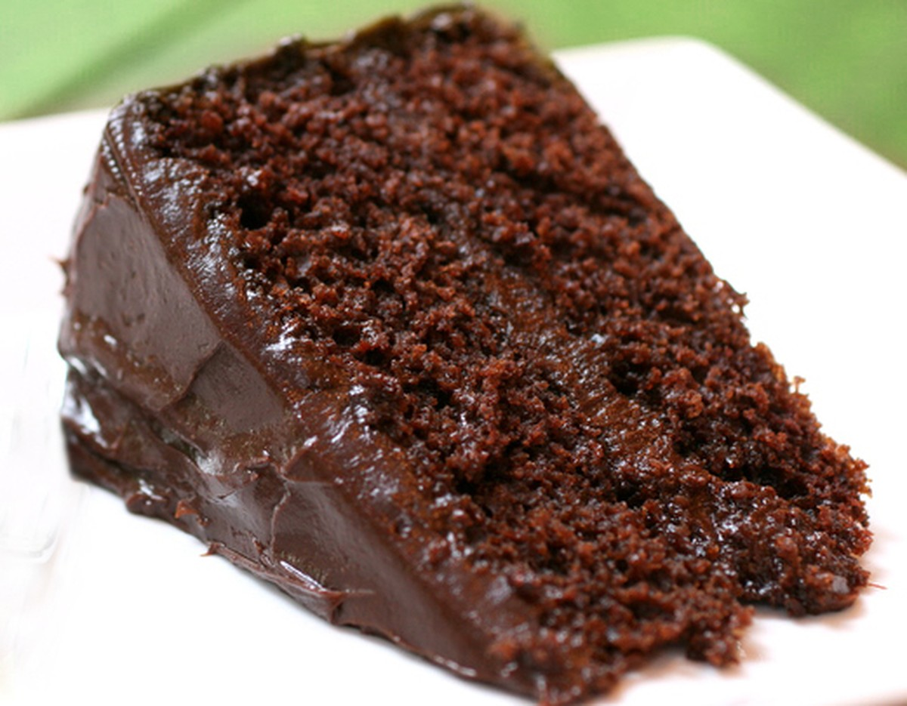

Bolo de Chocolate
Serve 8 porções.

Ingredientes:
Massa:
- 2 xícaras (chá) de farinha de trigo
- 1\2 xícara de chocolate em pó
- 3 colheres (sopa) margarina
- 3 ovos grandes
- 1 xícara (chá) leite gelado
- 1 xícara (chá) de açúcar refinado
- 1 colher sopa bem cheia de fermento em pó
Cobertura:
- 2 xícaras (chá) de farinha de trigo
- 1\2 xícara de chocolate em pó
- 3 colheres (sopa) margarina
- 3 ovos grandes
- 1 xícara (chá) leite gelado
- 1 xícara (chá) de açúcar refinado
- 1 colher sopa bem cheia de fermento em pó
Modo de Preparo:
Massa: Bater as claras em neve,reservar.
Passar as gemas pela peneira, Bater as gemas, açúcar e margarina,até obter um creme fofo.
Desligue a batedeira e acrescentar o leite, mexer, acrescentar a farinha e o chocolate, mexer,
bater um pouco para misturar os ingredientes, desligue a batedeira e acrescente delicadamente o fermento é as claras em neve.
Assar a 180 por mais ou menos 35 minutos,em forma 20 cm. untada é enfarinhada somente no fundo.
Fonte: Gshow.com